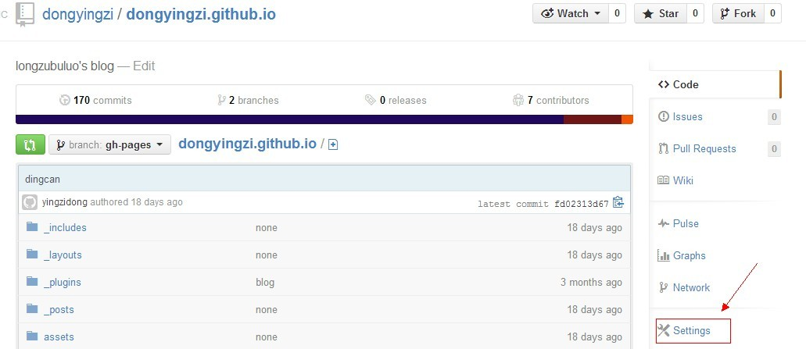
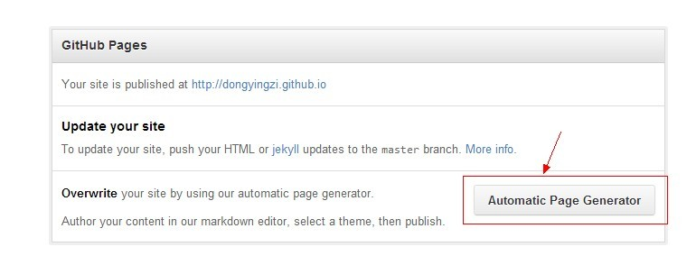
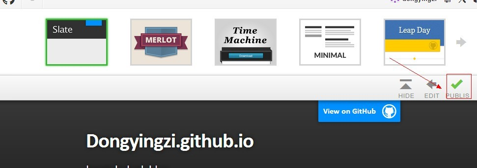
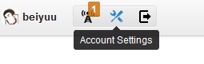

github set up blog
free blog hosting
Created by yingzidong / @longzubuluo
第一步创建博客
- 创建github帐号
- 创建github库 库名为：用户名.github.io
- 设置博客引导
库设置

自动生成

选择模板并发布

官方帮助文档
官方帮助文档第二步github客户端使用
windows 下的git bash使用
1、检查SSH keys的设置
首先我们需要检查你电脑上现有的ssh key：
$ cd ~/.ssh2、生成新的SSH Key：
输入下面的代码，就可以生成新的key文件，我们只需要默认设置就好，所以当需要输入文件名的时候，回车就好。
$ ssh-keygen -t rsa -C "邮件地址@youremail.com"
Generating public/private rsa key pair.
Enter file in which to save the key (/Users/your_user_directory/.ssh/id_rsa):<回车就好>然后系统会要你输入加密串（Passphrase）：
Enter passphrase (empty for no passphrase):<输入加密串>
Enter same passphrase again:<再次输入加密串>3、添加SSH Key到GitHub：
在本机设置SSH Key之后，需要添加到GitHub上，以完成SSH链接的设置。
用文本编辑工具打开id_rsa.pub文件，如果看不到这个文件，你需要设置显示隐藏文件。准确的复制这个文件的内容，才能保证设置的成功。
在GitHub的主页上点击设置按钮：

选择SSH Keys项，把复制的内容粘贴进去，然后点击Add Key按钮即可.
4、测试一下
可以输入下面的命令，看看设置是否成功，git@github.com的部分不要修改：
$ ssh -T git@github.com参考网址
参考网址 git命令中文手册第三步 进阶
Works in Mobile Safari
Try it out! You can swipe through the slides and pinch your way to the overview.
Marvelous Unordered List
- No order here
- Or here
- Or here
- Or here
Fantastic Ordered List
- One is smaller than...
- Two is smaller than...
- Three!
Transition Styles
You can select from different transitions, like:
Cube -
Page -
Concave -
Zoom -
Linear -
Fade -
None -
Default
Themes
Reveal.js comes with a few themes built in:
Default -
Sky -
Beige -
Simple -
Serif -
Night
Moon -
Simple -
Solarized
* Theme demos are loaded after the presentation which leads to flicker. In production you should load your theme in the <head> using a <link>.
Global State
Set data-state="something" on a slide and "something"
will be added as a class to the document element when the slide is open. This lets you
apply broader style changes, like switching the background.
Custom Events
Additionally custom events can be triggered on a per slide basis by binding to the data-state name.
Reveal.addEventListener( 'customevent', function() {
console.log( '"customevent" has fired' );
} );
Slide Backgrounds
Set data-background="#007777" on a slide to change the full page background to the given color. All CSS color formats are supported.
Image Backgrounds
<section data-background="image.png">Repeated Image Backgrounds
<section data-background="image.png" data-background-repeat="repeat" data-background-size="100px">Background Transitions
Pass reveal.js the backgroundTransition: 'slide' config argument to make backgrounds slide rather than fade.
Background Transition Override
You can override background transitions per slide by using data-background-transition="slide".
Clever Quotes
These guys come in two forms, inline:
“The nice thing about standards is that there are so many to choose from”
and block:
“For years there has been a theory that millions of monkeys typing at random on millions of typewriters would reproduce the entire works of Shakespeare. The Internet has proven this theory to be untrue.”
Pretty Code
function linkify( selector ) {
if( supports3DTransforms ) {
var nodes = document.querySelectorAll( selector );
for( var i = 0, len = nodes.length; i < len; i++ ) {
var node = nodes[i];
if( !node.className ) {
node.className += ' roll';
}
}
}
}
Courtesy of highlight.js.
Intergalactic Interconnections
You can link between slides internally, like this.
Fragmented Views
Hit the next arrow...
... to step through ...
any type- of view
- fragments
Fragment Styles
There's a few styles of fragments, like:
grow
shrink
roll-in
fade-out
highlight-red
highlight-green
highlight-blue
Spectacular image!

Export to PDF
Presentations can be exported to PDF, below is an example that's been uploaded to SlideShare.
Take a Moment
Press b or period on your keyboard to enter the 'paused' mode. This mode is helpful when you want to take distracting slides off the screen during a presentation.